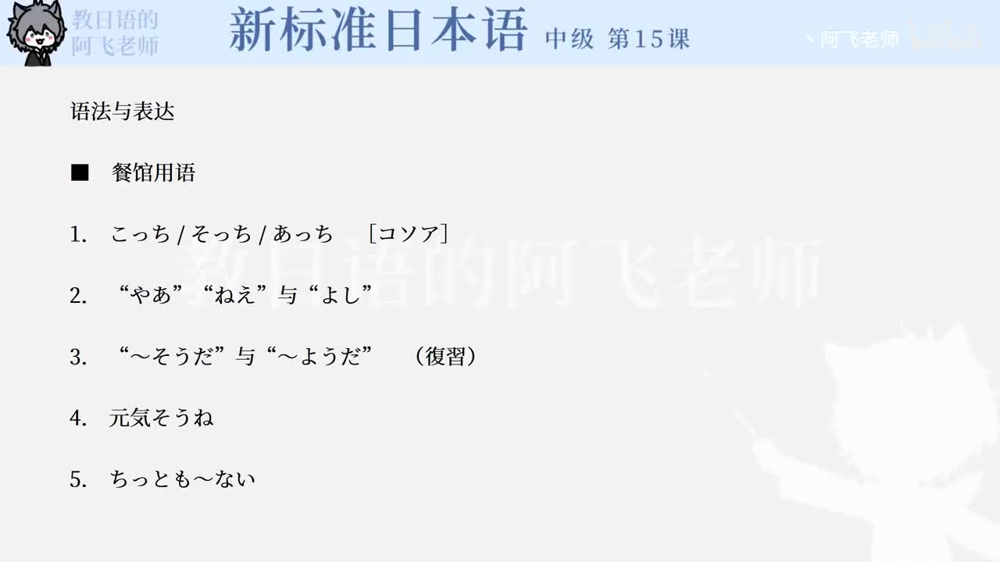

Bilibili P169 · Dialogue
同級生：久别重逢、点菜与日本酒鸡尾酒
王风在东京与大学同学金子、高桥重逢。从寒暄近况、转入工作话题，到餐馆点菜、询问推荐和决定饮品，把熟人会话和服务场景表达串起来。
全篇听力精讲
按 20 句轮播。每句包含原文、读音、中文意思、语法重点、结构拆解和提醒。
这一课的场景地图
店内招呼会话推进节点
久别问候会话推进节点
工作话题会话推进节点
点菜询问会话推进节点
推荐说明会话推进节点
饮品决定会话推进节点
日本酒カクテル会话推进节点
熟人共识会话推进节点
核心语法速览
こっち／そっち／あっち方向指示
熟人之间的随便说法。正式场合用「こちら／そちら／あちら」。
AもBも并列同类
表示 A 和 B 都如此。课文里「金子君も高橋さんも」表示两位老同学都被问候。
〜そう样态
从外观判断“看起来……”。「元気そう」就是看起来精神。
ちっとも〜ない强否定
一点也不，后面必须接否定。
それはそうと转换话题
把前面话题放一边，转到新话题。
〜んでしょ说明确认
带「のだ」说明语气，再用「でしょ」向对方确认。
なんて惊讶评价
把前项当作话题并带评价，“国外采访这种事，真厉害”。
〜ましょうよ邀请推进
邀请对方一起做，并带一点催促。
逐句精读
语法与表达
核心词汇与搭配
练习与复习
来源说明：视频标题、时长、CID 和首帧来自 Bilibili 公开视频接口；课文内容依据本地新标日中级第15课「同級生」整理。